193
UNIDADE 6 - CAPÍTULO 3
CAPÍTULO 3 - Ângulos
Ângulos consecutivos e adjacentes
História das pipas
[...]
A história das pipas data de muitos séculos e se confunde com a própria história da civilização, sendo utilizada como brinquedo, instrumento de defesa, arma, objeto artístico e de ornamentação. Conhecida como qua- drado, pipa, papagaio, pandorga, barrilete ou outro nome, dependendo da região ou país, ela é uma velha conhecida de brincadeiras infantis. Todos nós, com maior ou menor sucesso, já tentamos empinar uma. Temos de preservar sua beleza e simbologia, pois faz parte da nossa infân- cia. As pipas adornam, disputam espaço, fazem acro- bacias, mapeiam os céus. São a extensão natural da mão querendo tocar nas ilusões.
[...]
Com a ajuda do seu colega, construam uma pipa maranhão ou pipa carioca. Veja os materiais que serão necessários e os procedimentos.

Pipa maranhão ou pipa carioca
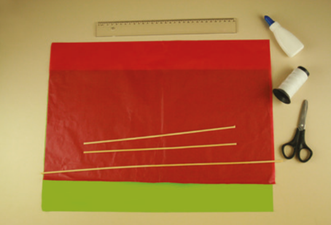Materiais:
► Varetas de qualquer tipo, sendo:
► 1 de 51 cm de comprimento e 2 mm de espessura;
► 2 de 32 cm de comprimento e 2 mm de espessura.
► Tesoura
► Papel de seda
► Cola branca
► Linha 10
► Régua
Para responder às questões propostas, foram efetuadas duas operações: uma adição e uma subtração entre as medidas dos ângulos. Vejamos algumas situações envolvendo essas operações.
194
UNIDADE 6 - CAPÍTULO 3
A cauda ideal é de tiras de plástico com 50 cm de comprimento por 2 cm de largura, colocadas em uma linha com 2 metros de extensão, a uma distância de 15 cm uma da outra.
Veja uma ilustração indicando as medidas que serão utilizadas para construir a pipa.
![Ilustração de um polígono em formato de pipa de 6 lados. A figura tem marcações que mostram 4 triângulos retângulos e 2 retângulos, tendo 2 triângulos em cima e embaixo com os 2 retângulos no meio.
A medida da vareta que divide a pipa ao meio mede 51 cm e as varetas superior e inferior medem 32 cm cada. Acima da vareta superior, os catetos dos dois triângulos retângulos medem 10 cm e 16 cm. Os lados dos retângulos que estão no centro da pipa medem 19 cm por 16 cm. Os catetos dos triângulos retângulos da parte inferior da ilustração medem 16 cm e 22 cm.](../../resources/images/unidade6/capitulo3/imagem2.png)
A vareta superior deve ter uma envergadura de 32 cm.
Procedimentos:
1. Amarre as varetas menores na vareta maior.
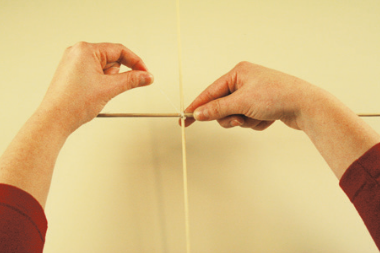2. Passe a linha em todas as pontas da armação.
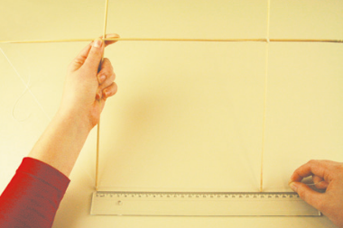195
UNIDADE 6 - CAPÍTULO 3
3. Cole a armação sobre o papel, mas deixe a menor extremidade de fora.

4. Corte o papel um pouco maior que a armação. Essa margem servirá para a colagem.
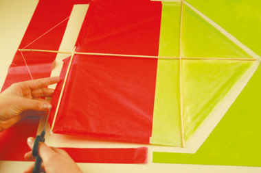5. Em cada extremidade, dê dois cortes.

6. Agora que todas as extremidades foram cortadas, passe cola sobre a margem e vire-a para dentro. Verifique se o papel está bem ajustado à linha.
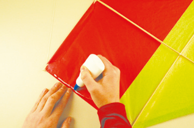7. Envergue a 1.ª das varetas e dê uma volta com a linha superior sobre a extremidade da vareta.
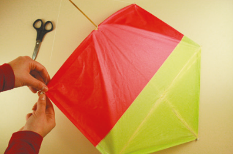196
UNIDADE 6 - CAPÍTULO 3
8. Em seguida, é só colocar o estirante (cabresto) e a rabiola.

Como regular o estirante (cabresto):
Uma regra prática para regular o estirante consiste em pendurá-lo e regular de modo que a superfície “D” forme um ângulo de aproximadamente 30º, como se vê na ilustração ao lado. Essa regulagem é aproximada, pois a definitiva será feita no momento de empinar. Estique a linha até chegar a um ponto em que esteja a dois dedos de distância (3 cm) da extremidade vertical e horizontal e dê um nó, fazendo o ângulo do estirante. A linha para empinar deve ser amarrada nesse ângulo.
Pronto! Agora, é só achar um lugar adequado para empinar sua pipa. Porém, algumas regras de segurança devem ser observadas para essa brincadeira:
• Utilize linhas de algodão, pois elas são menos perigosas. Nunca use linhas de fio de cobre ou com cerol;
• Preste atenção a motocicletas e bicicletas, porque a linha, mesmo sem cerol, é perigosa para os condutores;
• Procure um local aberto e distante de fios ou antenas para evitar choques elétricos, como campos de futebol e parques;
• Nunca solte pipas em dias de chuva ou com relâmpagos;
• De modo algum tente retirar pipas presas na rede elétrica ou árvores, nem faça pipas com papel laminado, pois há grande risco de choque e acidentes;
• Jamais solte pipa em lajes ou telhados, para evitar quedas;
• Tenha cuidado e observe onde pisa, principalmente quando andar para trás, para não cair;
• Caso a linha quebre, não corra atrás da pipa sem observar se o caminho é seguro, como atravessar ruas e passar por buracos;
• Use luvas ao soltar pipa, para não machucar as mãos.
197
UNIDADE 6 - CAPÍTULO 3
Observe os ângulos formados pelas varetas da pipa. Veja também a representação de seus ângulos na ilustração.

Os ângulos AÔB e BÔC apresentam um vértice e um dos lados em comum. Esses ângulos são chamados de ângulos consecutivos.
Dois ângulos são denominados de ângulos consecutivos quando têm em comum o vértice e um dos lados.
Além de serem ângulos consecutivos, os ângulos AÔB e BÔC são denominados ângulos adjacentes, pois não têm pontos internos em comum.
Dois ângulos são denominados de ângulos adjacentes quando são consecutivos e não possuem pontos internos em comum.

Observe:
MÔN e MÔP são ângulos consecutivos, porém não são ângulos adjacentes.
MÔN e NÔP, além de serem ângulos consecutivos, são ângulos adjacentes.
198
UNIDADE 6 - CAPÍTULO 3
MÔN e PÔQ não são ângulos consecutivos, logo, não são ângulos adjacentes.
Bissetriz de um ângulo
Com o auxílio do transferidor, construa, em uma folha de papel, um ângulo de 90º.

Em seguida, recorte o ângulo e dobre-o, de modo que um lado coincida com o outro.

Com um lápis e uma régua, trace sobre a marca que ficou no papel (depois de dobrado) uma semirreta \(\overrightarrow{OC}\).

199
UNIDADE 6 - CAPÍTULO 3
A semirreta \(\overrightarrow{OC}\) que você traçou dividiu o ângulo AÔB em dois ângulos com a mesma medida, ou seja, congruentes. Essa semirreta com origem em O denomina-se bissetriz de um ângulo.
Bissetriz de um ângulo é a semirreta que tem origem no vértice desse ângulo, dividindo-o em dois ângulos adjacentes congruentes.
Agora, vamos construir a bissetriz de um ângulo qualquer utilizando um compasso.
Em seu caderno, construa um ângulo AÔB, com uma medida qualquer.
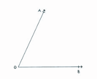Usando o compasso, coloque a ponta-seca no vértice O. Com uma abertura qualquer, marque os pontos D e E.
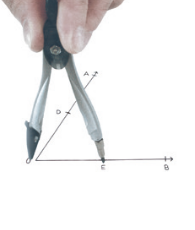Primeiramente, coloque a ponta-seca do compasso em D e desenhe um arco. Depois, coloque-a em E, com a mesma abertura, e repita o procedimento. Marque o ponto F, no qual os arcos se intersectam.
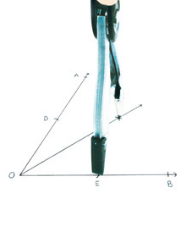Em seguida, trace a semirreta \(\overrightarrow{OF}\), bissetriz do ângulo AÔB.

200
UNIDADE 6 - CAPÍTULO 3
ENCONTRE SOLUÇÕES
1. Utilizando um transferidor, um compasso e uma régua, construa, em seu caderno, os ângulos indicados e trace a bissetriz de cada um deles.
a) 120º
b) 60º
c) 135º
d) 45º
2. Determine a medida de x, sabendo que \(\overrightarrow{OC}\) é bissetriz de AÔB.
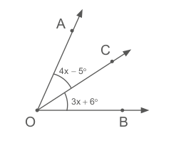3. Calcule as medidas dos ângulos desconhecidos.
a) med (AÔC) = 66º
\(\overrightarrow{OB}\): bissetriz de AÔC
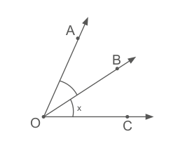b) med (MÔN) = 60º
\(\overrightarrow{ON}\): bissetriz de MÔP
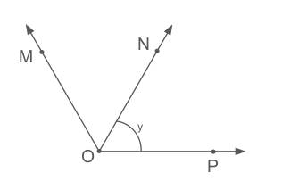c) med (AÔD) = 130º
\(\overrightarrow{OB}\): bissetriz de AÔD
\(\overrightarrow{OC}\): bissetriz de BÔD

4. Calcule a med (AÔC) em cada caso, sabendo que \(\overrightarrow{OB}\) é bissetriz de AÔC.
a)
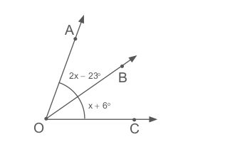b)

5. Na figura a seguir, AÔE é um ângulo raso, \(\overrightarrow{OB}\) é bissetriz do ângulo AÔC e \(\overrightarrow{OD}\) é bissetriz de CÔE.
![Ilustração de cinco retas, A, B, C, D e E saindo do mesmo vértice Ô. Elas estão espaçadas entre si, com aberturas que formam dez ângulos, apenas dois deles com marcadores. As retas A e E estão na horizontal, a reta A apontada para a esquerda e a reta E apontada para a direita. Elas formam um ângulo raso AÔE. A reta OB, está na transversal, levemente inclinada para a esquerda. Ela é bissetriz do ângulo AÔC. As retas C e D, estão na transversal, apontadas para a direita. A reta OD é bissetriz do ângulo CÔE. Um marcador de ângulo, identificado pela fórmula: 6x +15º, liga os lados A e B. Um segundo marcador de ângulo, identificado pela fórmula: x + 5º, liga os lados D e E.](../../resources/images/unidade6/capitulo3/imagem30.png)
201
UNIDADE 6 - CAPÍTULO 3
► Nessas condições, determine:
a) o valor de x;
b) as medidas dos ângulos:
► AÔB;
► BÔC;
► DÔE;
► CÔD;
► AÔC;
► CÔE;
► AÔD;
► BÔE.
6. Vamos jogar batalha naval?
1. Com o auxílio de uma régua, construa, em uma folha de papel, duas retas perpendiculares, formando quatro ângulos de 90º.
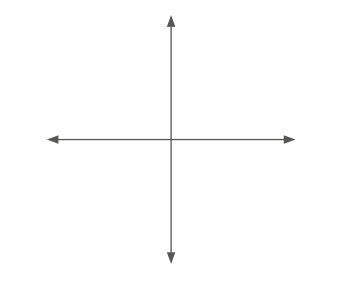2. Em seguida, com o auxílio do compasso, trace a bissetriz desses ângulos.


3. Trace novamente a bissetriz dos ângulos encontrados, ob- tendo a divisão de 360º em 16 partes iguais.

4. Utilizando um compasso, trace três circunferências, com o centro no ponto de encontro das retas.

202
UNIDADE 6 - CAPÍTULO 3
5. Indique as medidas dos ângulos nas extremidades e coloque números para indicar as circunferências, conforme o modelo.
![Ilustração de duas retas perpendiculares com setas nas pontas, duas retas em forma de X passam pelo ponto em comum das retas perpendiculares, formando entre as retas 8 ângulos iguais. Mais duas retas são traçadas entre as retas dos 8 ângulos iguais, formando assim 16 ângulos iguais. Três circunferências de tamanhos diferentes, partem do centro no ponto de encontro das retas e são nomeadas de 1, 2, 3 de centro para fora. Partindo da reta horizontal à direita, no sentido anti-horário, cada reta, a partir do ponto de encontro entre elas, está indicada com o ângulo correspondente: 0 grau = 360 graus. 22 graus e 30’. 45 graus. 67 graus e 30’. 90 graus. 112 graus e 30’. 135 graus. 157 graus e 30’. 180 graus. 202 graus e 30’. 225 graus. 247 graus e 30’. 270 graus. 292 graus e 30’. 315 graus. 337 graus e 30’.](../../resources/images/unidade6/capitulo3/imagem35.png)
6. Pronto! Agora é só jogar. Localize cinco pontos no plano construído. Os pontos representam a localização dos navios que deverão ser afundados. Para localizar cada ponto, primeiro deve-se indicar o número correspondente à circunferência e depois a medida correspondente à amplitude do ângulo.
Observe:
![Ilustração de duas retas perpendiculares com setas nas pontas, duas retas em forma de X passam pelo ponto em comum das retas perpendiculares, formando entre as retas 8 ângulos iguais. Mais duas retas são traçadas entre as retas dos 8 ângulos iguais, formando assim 16 ângulos iguais. Três circunferências de tamanhos diferentes, partem do centro no ponto de encontro das retas e são nomeadas de 1, 2, 3 do centro para fora. Partindo da reta horizontal à direita, no sentido anti-horário, cada reta, a partir do ponto de encontro entre elas, está indicada com o ângulo correspondente: 0 grau = 360 graus. 22 graus e 30’. 45 graus. 67 graus e 30’. 90 graus. 112 graus e 30’. 135 graus. 157 graus e 30’. 180 graus. 202 graus e 30’. 225 graus. 247 graus e 30’. 270 graus. 292 graus e 30’. 315 graus. 337 graus e 30’. Em cima do ângulo de 45 graus na terceira circunferência, um ponto verde, indicado pelo número 3; 45 graus.](../../resources/images/unidade6/capitulo3/imagem36.png)
Convide um colega para jogar com você. Alternadamente, cada um “dá um tiro” para tentar afundar o navio do outro. Caso acerte a posição, pode “atirar” novamente. Quando o adversário acertar a posição do navio, o jogador deverá informá-lo dizendo “afundou”. Caso contrário, deve dizer “água”. Vence o jogador que conseguir afundar primeiro todos os navios do adversário.
Para você poder registrar os “tiros” que foram dados, pode-se construir dois planos: um para você marcar os seus navios e outro para você anotar os seus palpites.
203
UNIDADE 6 - CAPÍTULO 3
Ângulos complementares
Observe os ângulos presentes na estrutura de um telhado. Vamos analisar dois deles.
![Fotografia colorida da estrutura interna de madeira de um telhado. Tábuas grossas de madeira são unidas formando diferentes formas geométricas. No centro da fotografia, uma viga horizontal cruza o forro. Perpendicular a ela e no centro da estrutura, outra viga é colocada num ângulo de 90º, sustentada pela viga horizontal. À direita e à esquerda da viga perpendicular há quatro triângulos encaixados, dois de cada lado, também sustentados pela viga horizontal. Um desses triângulos é um triângulo retângulo, o outro é acutângulo. Essa estrutura dos dois triângulos é espelhada.](../../resources/images/unidade6/capitulo3/imagem37.png)
Por meio de um modelo matemático, vamos representar dois desses ângulos. Observe:
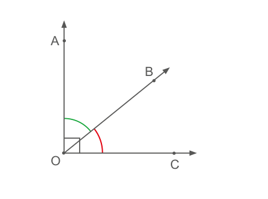1. Troque ideias com um colega e respondam quanto mede a soma das medidas dos ângulos AÔB e BÔC.

2. Quando dois ângulos têm a soma de suas medidas igual a 90º, eles recebem um nome especial. Como são chamados?
Dois ângulos são chamados de ângulos complementares quando a soma de suas medidas é igual a 90º.
204
UNIDADE 6 - CAPÍTULO 3
Veja um exemplo em que os ângulos são complementares:

med (AÔB) + med (BÔC) = 90º
med (AÔB) + 40º = 90º
med (AÔB) = 90º − 40º
med (AÔB) = 50º
Dizemos que o complemento do ângulo de 40º é 50º, pois é quanto falta para completar 90º. Nesse caso, AÔB é complementar de BÔC, assim como BÔC é complementar de AÔB.
Ângulos suplementares
Observe, agora, outros dois ângulos presentes na estrutura do telhado.
![Fotografia colorida da estrutura interna de madeira de um telhado. Tábuas grossas de madeira são unidas formando diferentes formas geométricas. No centro da fotografia, uma viga horizontal cruza o forro. Perpendicular a ela e no centro da estrutura, outra viga é colocada num ângulo de 90º, sustentada pela viga horizontal. À direita e à esquerda da viga perpendicular há quatro triângulos encaixados, dois de cada lado, também sustentados pela viga horizontal. Um desses triângulos é um triângulo retângulo, o outro é acutângulo. Essa estrutura dos dois triângulos é espelhada.](../../resources/images/unidade6/capitulo3/imagem40.png)
Ao representar, por meio de um modelo matemático, os outros dois ângulos presentes na estrutura do telhado, temos:
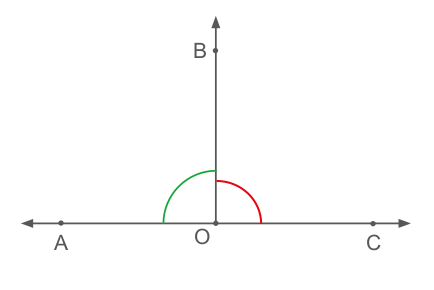205
UNIDADE 6 - CAPÍTULO 3
1. Troque ideias com um colega e respondam quanto mede a soma das medidas dos ângulos AÔB e BÔC.
2. Quando dois ângulos têm a soma de suas medidas igual a 180º, eles recebem um nome especial. Como são chamados?
Dois ângulos são chamados de ângulos suplementares quando a soma de suas medidas é igual a 180º.
Veja um exemplo em que os ângulos são suplementares:
med (AÔB) + med (BÔC) = 180º
med (AÔB) + 60º = 180º
med (AÔB) = 180º − 60º
med (AÔB) = 120º
Dizemos que o suplemento do ângulo de 60º é 120º, pois é quanto falta para completar 180º. Nesse caso, AÔB é suplementar de BÔC, assim como BÔC é suplementar de AÔB.
ENCONTRE SOLUÇÕES
1. Verifique se as afirmações são verdadeiras ou falsas e justifique as respostas em seu caderno.
a) Os ângulos de 25º e 65º são suplementares.
b) Os ângulos de 35º e 45º são complementares.
c) Os ângulos de 120º e 60º são suplementares.
d) Os ângulos de 40º e 50º são complementares.
2. Sendo x a medida de um ângulo, escreva, em seu caderno, a expressão que representa:
a) a medida do seu complemento;
b) a medida do seu suplemento;
c) o dobro do seu complemento;
d) o triplo do seu suplemento;
e) a metade do seu suplemento;
f) a quarta parte do seu complemento.
206
UNIDADE 6 - CAPÍTULO 3
3. Em seu caderno, calcule o valor de x, sabendo que os ângulos são complementares.
a)
![Ilustração de três retas, sem identificação, saindo do mesmo vértice. Uma reta está na horizontal, apontada para a direita, e a outra na vertical, as duas, unidas pelo mesmo vértice, formando um ângulo de 90º. Uma terceira reta, inclinada para a direita, divide o ângulo de 90º em dois ângulos diferentes. Um marcador de ângulo, identificado por 2x, liga o lado da reta vertical com o lado da reta inclinada. Um segundo marcador de ângulo, identificado por X, liga o lado da reta inclinada com o lado da reta horizontal.](../../resources/images/unidade6/capitulo3/imagem43.png)
b)
![Ilustração de três retas, sem identificação, saindo do mesmo vértice. Uma reta, apontada para a esquerda, está na horizontal e a outra na vertical, com um leve inclinamento para a direita, as duas, unidas pelo mesmo vértice, formam um ângulo maior que 90º. Uma terceira reta, inclinada para a esquerda, divide o ângulo maior em dois ângulos menores e diferentes. Um marcador de ângulo, identificado por x + 20º, liga o lado da reta vertical com o lado da reta inclinada. Um segundo marcador de ângulo, identificado por x + 10º, liga o lado da reta inclinada com o lado da reta horizontal.](../../resources/images/unidade6/capitulo3/imagem44.png)
c)
![Ilustração de três retas, sem identificação, saindo do mesmo vértice. Uma reta está horizontal, apontada para a direita, e a outra na vertical, as duas, unidas pelo mesmo vértice, formam um ângulo de 90º. Uma terceira reta, levemente inclinada para a direita, divide o ângulo de 90º em dois ângulos diferentes. Um marcador de ângulo, identificado por 2x - 20º, liga o lado da reta vertical com o lado da reta inclinada. Um segundo marcador de ângulo, identificado por 3x - 15º, liga o lado da reta inclinada com o lado da reta horizontal.](../../resources/images/unidade6/capitulo3/imagem45.png)
d)
![Ilustração de três retas, sem identificação, saindo do mesmo vértice. Uma reta está horizontal, apontada para a direita, e a outra na vertical, as duas, unidas pelo mesmo vértice, formam um ângulo de 90º. Uma terceira reta, levemente inclinada para a direita, divide o ângulo de 90º em dois ângulos diferentes. Um marcador de ângulo, identificado por x - 15º, liga o lado da reta vertical com o lado da reta inclinada. Um segundo marcador de ângulo, identificado por 4x, liga o lado da reta inclinada com o lado da reta horizontal.](../../resources/images/unidade6/capitulo3/imagem46.png)
4. Determine a medida do ângulo que é congruente ao seu complemento.
5. A medida de um ângulo é igual à quarta parte da medida do seu complemento. Calcule a medida desse ângulo.
6. Em seu caderno, calcule o valor de x, sabendo que os ângulos são suplementares.
a)
![Ilustração de três retas, sem identificação, saindo do mesmo vértice. Elas estão espaçadas entre si, com aberturas que formam três ângulos diferentes, apenas dois deles com marcadores. Duas retas estão na horizontal, uma apontada para a esquerda, e a outra, apontada para a direita do vértice, formando um ângulo de 180º. Uma terceira reta está inclinada para a direita. Um marcador de ângulo, identificado pela fórmula 3x + 5, liga o lado da reta horizontal esquerda com o lado da reta inclinada. Um segundo marcador de ângulo, identificado pela fórmula x + 15º, liga o lado da reta inclinada com o lado da reta horizontal direita.](../../resources/images/unidade6/capitulo3/imagem47.png)
b)
![Ilustração de três retas, sem identificação, saindo do mesmo vértice. Elas estão espaçadas entre si, com aberturas que formam três ângulos diferentes, apenas dois deles com marcadores. Duas retas estão na horizontal, uma apontada para a esquerda, e a outra, apontada para a direita do vértice, formando um ângulo de 180º. Uma terceira reta está inclinada para a esquerda. Um marcador de ângulo, identificado pela fórmula x + 10º, liga o lado da reta horizontal esquerda com o lado da reta inclinada. Um segundo marcador, identificado por 8x - 10º, liga o lado da reta inclinada com o lado da reta horizontal direita.](../../resources/images/unidade6/capitulo3/imagem48.png)
c)
![Ilustração de três retas, sem identificação, saindo do mesmo vértice. Elas estão espaçadas entre si, com aberturas que formam três ângulos diferentes, apenas dois deles com marcadores. Duas retas estão na horizontal, uma apontada para a esquerda, e a outra, apontada para a direita do vértice, formando um ângulo de 180º. Uma terceira reta está inclinada para a esquerda. Um marcador de ângulo, identificado por 47º 30’, liga o lado da reta horizontal esquerda com o lado da reta inclinada. Um segundo marcador, identificado por X, liga o lado da reta inclinada com o lado da reta horizontal direita.](../../resources/images/unidade6/capitulo3/imagem49.png)
d)
![Ilustração de três retas, sem identificação, saindo do mesmo vértice. Elas estão espaçadas entre si, com aberturas que formam três ângulos diferentes, apenas dois deles com marcadores. Duas retas estão na horizontal, uma apontada para a esquerda, e a outra, apontada para a direita do vértice, formando um ângulo de 180º. Uma terceira reta está levemente inclinada para a direita. Um marcador de ângulo, identificado pela fórmula x +12º, liga o lado da reta horizontal esquerda com o lado da reta inclinada. Um segundo marcador, identificado pela fórmula x - 23º, liga o lado da reta inclinada com o lado da reta horizontal direita.](../../resources/images/unidade6/capitulo3/imagem50.png)
7. A quinta parte da medida do complemento de um ângulo é igual a 10º. Quanto mede esse ângulo?
8. A medida de um ângulo é igual à terça parte da medida do seu suplemento. Calcule a medida desse ângulo.
9. O dobro da medida de um ângulo é igual à medida do seu suplemento mais 30º. Quanto mede esse ângulo?
207
UNIDADE 6 - CAPÍTULO 3

10. (OBMEP) Uma tira de papel retangular é dobrada ao longo da linha tracejada, conforme indicado, formando a figura plana da direita. Qual a medida do ângulo x ?

a) 30°
b) 50°
c) 80°
d) 100°
e) 130°
Ângulos opostos pelo vértice
A cadeira a seguir apresenta uma estrutura de madeira e nela podemos observar a formação de vários ângulos.

Vamos representar alguns ângulos da estrutura de madeira no seguinte modelo matemático:

Agora, veja as relações que existem entre esses ângulos:
I. x + y = 180º (ângulos suplementares)
x = 180º − y
208
UNIDADE 6 - CAPÍTULO 3
II. y + z = 180º
z = 180º − y (ângulos suplementares)
Se x = 180º − y e z = 180º − y, então x = z (propriedade transitiva).
Portanto, os ângulos x e z são congruentes.
Esses ângulos têm o mesmo vértice e seus lados são semirretas opostas. Eles são chamados de ângulos opostos pelo vértice (opv).
med (AÔC) = med (BÔD)
med (AÔB) = med (CÔD)
ENCONTRE SOLUÇÕES
1. Calcule as medidas dos ângulos indicados nas figuras.
a)
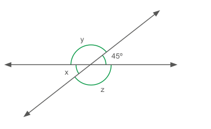b)
![Ilustração de três segmentos de retas, sem identificação. Duas retas diagonais estão cruzadas em X, uma apontada para a direita, e a outra apontada para a esquerda. A terceira reta, cruza o X na horizontal. Essa composição, forma três pares de ângulos, opostos pelo vértice. O primeiro par, ângulos verticais, são maiores e iguais. Um marcador de ângulo está identificado por X e o outro marcador de ângulo está identificado por 100º. O segundo par, os ângulos são menores, iguais e estão posicionados entre os lados da reta diagonal direita e reta horizontal. Um marcador de ângulo está identificado por W e o outro marcador de ângulo está identificado por Y. O terceiro par, os ângulos são iguais e menores que o segundo par, e estão posicionados entre os lados da reta diagonal esquerda e reta horizontal. Um marcador de ângulo está identificado por 25º e o outro marcador de ângulo está identificado por Z.](../../resources/images/unidade6/capitulo3/imagem56.png)
2. As medidas de dois ângulos opostos pelo vértice são dadas, em graus, por 3x + 12º e 4x − 10º. Quais são as medidas desses ângulos?
3. Em seu caderno, calcule os valores de x e y.
a)
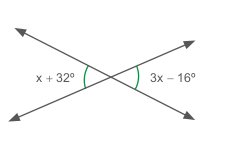b)
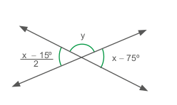